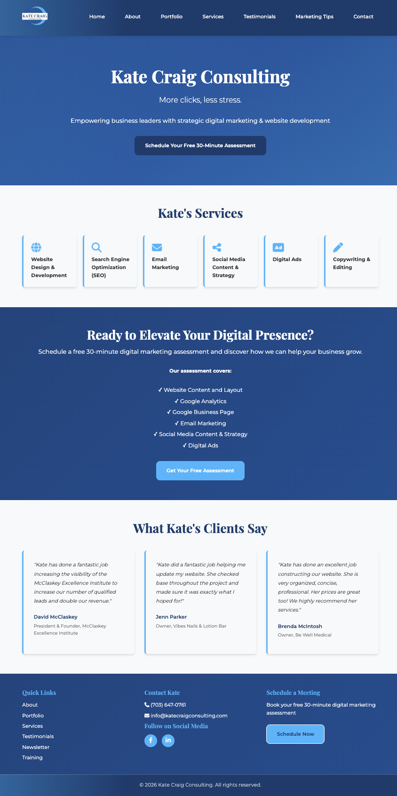
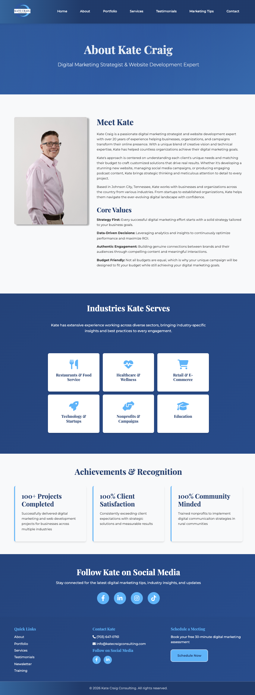
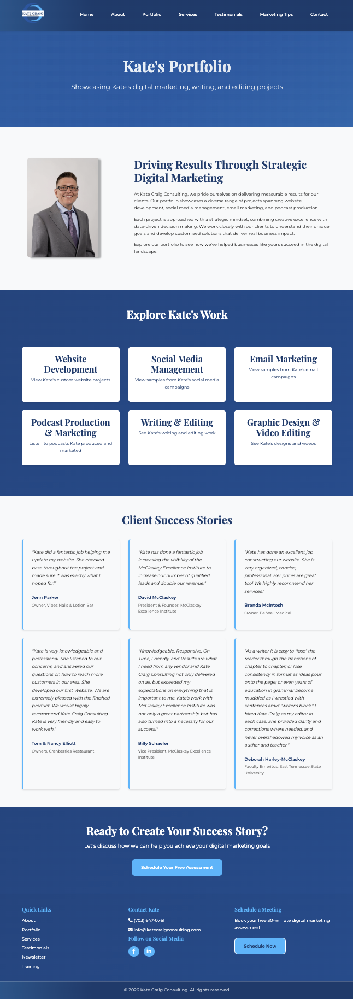
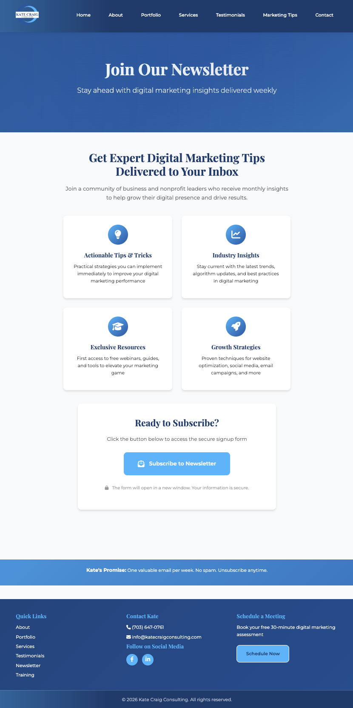
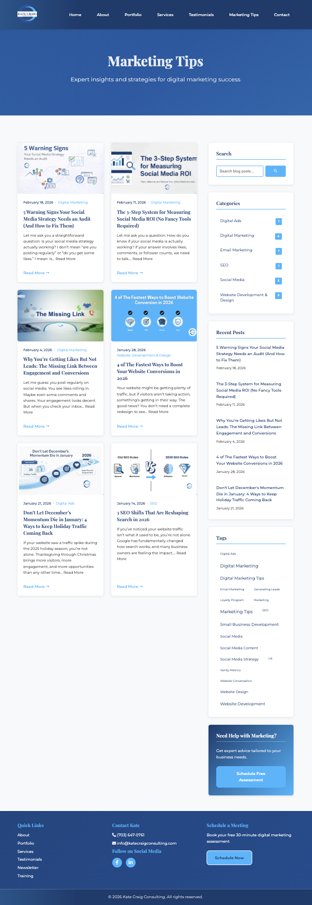
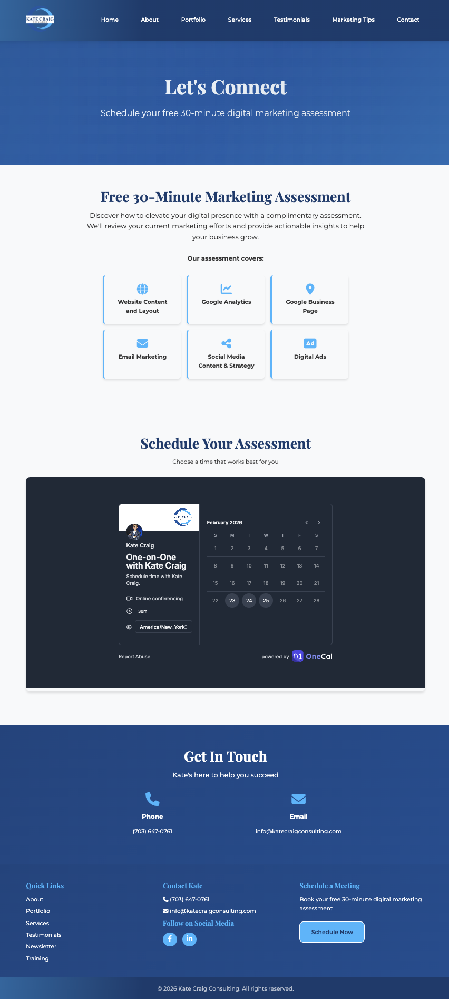

The Kate Craig Consulting Website project was coded using HTML+CSS and JavaScript. The website features a modern design, with a focus on showcasing Kate's skills and experience as a digital marketing consultant. The site includes sections for an overview of Kate's services, a portfolio of past projects, and a signup form for Kate's weekly newsletter as well as a calender integration to sign up for a free 30-minute assessment. The website is fully responsive, ensuring that it looks great on all devices, from desktop computers to mobile phones. Overall, the Kate Craig Consulting Website project is a great example of how web development can be used to create a professional and engaging online presence for a business or individual.





